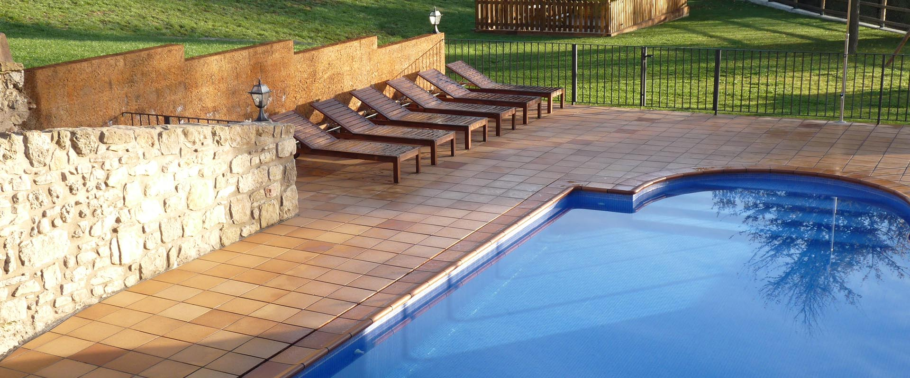
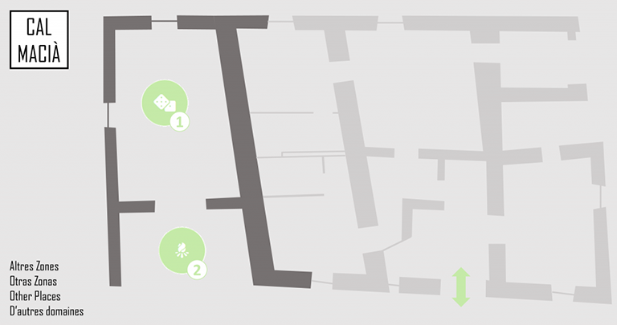
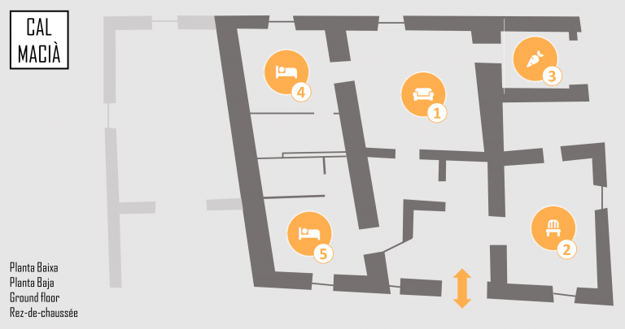
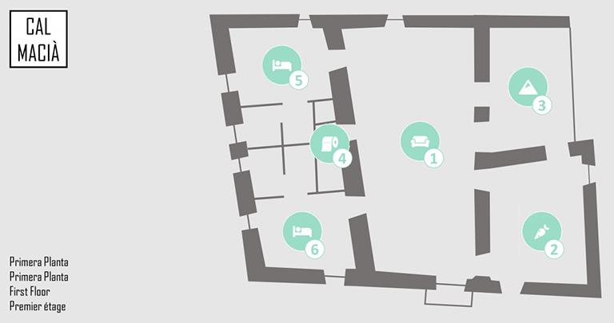
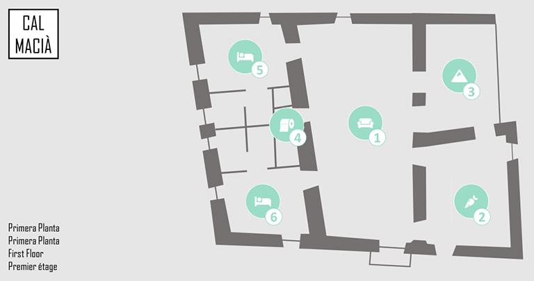
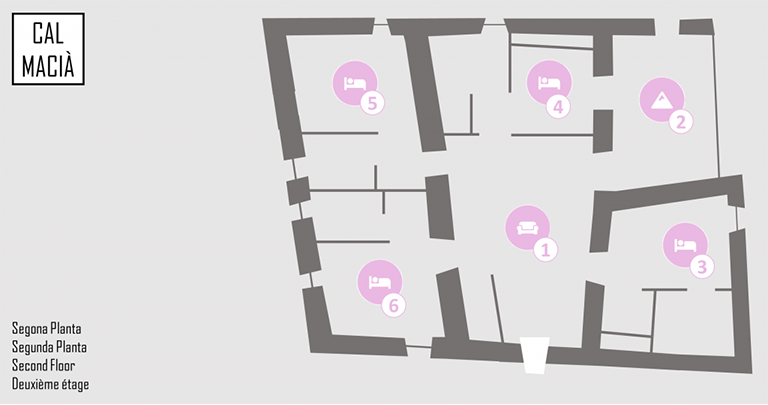
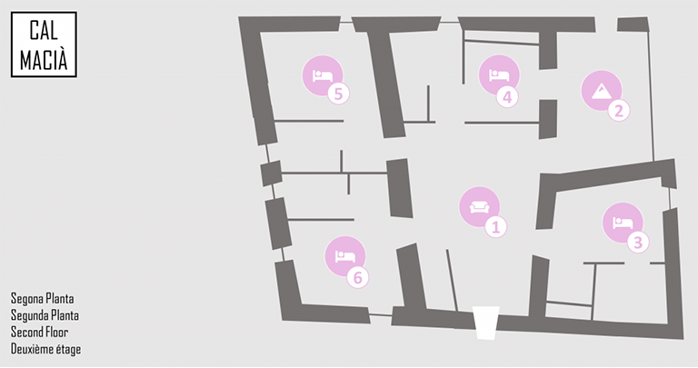

Cal Macià es una antigua casa pairal construida antes del siglo XVI. Se encuentra situada al pie de los riscos de Malla dentro del término municipal de la Espunyola. En el año 2010 fue reformada y equipada con el objetivo de proporcionar una experiencia confortable y permitir disfrutar de un entorno rural sin sacrificar las comodidades de cualquier hogar actual.
Tipo CASA RURAL Alquiler COMPLETO Situación AISLADA Capacidad 16 PERSONAS Wifi SÍ, GRATIS Mascotas Consultar antes de reservar
Casa rural con un jardín maravilloso...
EXTERIOR, BARBACOA Y SALA DE JUEGOS
La casa dispone de un bonito jardín con mobiliario exterior, piscina, zona destinada a los niños con un parque infantil y un arenal. Barbacoa con mesa para comer en el exterior y al lado se encuentra la sala de juegos con billar, futbolín, ping-pong, diana y otros juegos.
Barbacoa Piscina Campo de fútbol Campo de voleibol Zona infantil Mobiliario de jardín Futbolín Billar
Sala de juegos Zona Barbacoa Sala con un horno de leña de decoración, 2 habitaciones con baño privado, comedor con televisión, equipo de música y piano, y cocina pequeña equipada donde hay también lavadora, secadora, lavaplatos, nevera y congelador, microondas, etc.
Comedor Sala de juegos Cocina Habitación doble con baño Habitación doble con baño Comedor-sala de estar con chimenea, televisión, satélite, radio-cd, y reproductor de DVD, baño común, cocina equipada con los electrodomésticos y utensilios necesarios (placa de inducción, nevera, congelador, lavavajillas, horno, microondas, tostadora, cafeteras una de las cuales es Nespresso, etc.), 2 habitaciones con baño privado, terraza con mesa para poder comer en el exterior y balcones.
Chimenea, TV en salón, Cocina equipada, Cafetera Nespresso y Dolce Gusto, Terraza, Balcones, 3 baños y Secador de pelo.
.png) Comedor
Cocina
Porche exterior
Baño común
Habitación 2 camas y baño
Habitación 2 camas y baño

Comedor
Cocina
Porche exterior
Baño común
Habitación 2 camas y baño
Habitación 2 camas y baño

Sala de estar con proyector, 4 habitaciones con baño privado y terraza con butacas desde donde se puede disfrutar de unas excelentes vistas panorámicas.
Proyector, 4 habitaciones dobles, Terraza y 4 baños.
Sala del proyector Porche.png) Habitación dos camas y baño
Habitación doble y baño
Habitación doble y baño
Habitación doble y baño

Habitación dos camas y baño
Habitación doble y baño
Habitación doble y baño
Habitación doble y baño

https://www.calmacia.com/
 E-mail
infocalmacia@gmail.com
Teléfono
+34 639 23 29 82
T.R. Cal Macià SCP
J67392779
Cal Macià, s/n | 08614 L’Espunyola - Berguedà
PCC-000590-24
Coordenadas
42º 3’ 25.01’’N
1º 45’ 56.60’’E
E-mail
infocalmacia@gmail.com
Teléfono
+34 639 23 29 82
T.R. Cal Macià SCP
J67392779
Cal Macià, s/n | 08614 L’Espunyola - Berguedà
PCC-000590-24
Coordenadas
42º 3’ 25.01’’N
1º 45’ 56.60’’E
El Berguedà ofrece un amplio abanico de actividades durante todo el año, ya sea de tipo deportivo como excursiones en BTT o a pie, o bien salidas de tipo cultural como visitas a Santa Maria de Queralt, el Castillo de Cardona o la Ruta del Románico.